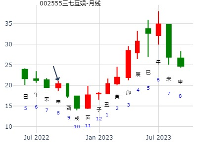

试测方大炭素2021.1.11己未一-1.15癸亥五哪日顶？+男 占事：没填
公历起卦时间：2021年1月12日9时28分 (电脑自动)
干支：庚子年 己丑月 庚申日 辛巳时 （日空：子丑）
乾宫：山地剥 乾宫：山地剥
六神 伏神 本 卦 变 卦
螣蛇 妻财丙寅木 ▅▅▅▅▅ 妻财丙寅木 ▅▅▅▅▅
勾陈 兄弟壬申金 子孙丙子水 ▅▅ ▅▅ 世 子孙丙子水 ▅▅ ▅▅ 世
朱雀 父母丙戌土 ▅▅ ▅▅ 父母丙戌土 ▅▅ ▅▅
青龙 妻财乙卯木 ▅▅ ▅▅ 妻财乙卯木 ▅▅ ▅▅
玄武 官鬼乙巳火 ▅▅ ▅▅ 应 官鬼乙巳火 ▅▅ ▅▅ 应
白虎 父母乙未土 ▅▅ ▅▅ 父母乙未土 ▅▅ ▅▅
3月第1周大盘。山地剥静卦。寅月跌完出剥卦，还能涨。.md
老罗--红牛铜钱卦 丑未冲，
手工指定(起卦方式)
公历：2016年2月25日16时8分，星期四。
干支：丙申年 庚寅月 丁丑日 戊申时 (卦身：辰)
主变卦 山地剥(乾宫) [空亡:申、酉]
青龙 ▅▅▅▅▅ 妻财丙寅木
玄武 兄弟壬申金 ▅▅ ▅▅ 子孙丙子水 世
白虎 ▅▅ ▅▅ 父母丙戌土
螣蛇 ▅▅ ▅▅ 妻财乙卯木
勾陈 ▅▅ ▅▅ 官鬼乙巳火 应
朱雀 ▅▅ ▅▅ 父母乙未土
主帖标题: 六爻猜想：2020年2月20日上证收盘指数个位数?
2020年2月20日上证收盘指数个位数+2yn
男 占事：没填
公历起卦时间：2020年2月20日14时52分 (电脑自动)
干支：庚子年 戊寅月 癸巳日 己未时 （日空：午未）
乾宫：山地剥 乾宫：山地剥
白虎 妻财丙寅木 ▅▅▅▅▅ 妻财丙寅木 ▅▅▅▅▅
螣蛇 兄弟壬申金 子孙丙子水 ▅▅ ▅▅ 世 子孙丙子水 ▅▅ ▅▅ 世
勾陈 父母丙戌土 ▅▅ ▅▅ 父母丙戌土 ▅▅ ▅▅
朱雀 妻财乙卯木 ▅▅ ▅▅ 妻财乙卯木 ▅▅ ▅▅
青龙 官鬼乙巳火 ▅▅ ▅▅ 应 官鬼乙巳火 ▅▅ ▅▅ 应
玄武 父母乙未土 ▅▅ ▅▅ 父母乙未土 ▅▅ ▅▅
主帖标题: 个股 dd
测大东海A2.27日收盘jw现在5.94
男 占事：没填
公历起卦时间：2020年2月27日10时4分 (电脑自动)
干支：庚子年 戊寅月 庚子日 辛巳时 （日空：辰巳）
乾宫：山地剥 乾宫：山地剥
六神 伏神 本 卦 变 卦
螣蛇 妻财丙寅木 ▅▅▅▅▅ 妻财丙寅木 ▅▅▅▅▅
勾陈 兄弟壬申金 子孙丙子水 ▅▅ ▅▅ 世 子孙丙子水 ▅▅ ▅▅ 世
朱雀 父母丙戌土 ▅▅ ▅▅ 父母丙戌土 ▅▅ ▅▅
青龙 妻财乙卯木 ▅▅ ▅▅ 妻财乙卯木 ▅▅ ▅▅
玄武 官鬼乙巳火 ▅▅ ▅▅ 应 官鬼乙巳火 ▅▅ ▅▅ 应
白虎 父母乙未土 ▅▅ ▅▅ 父母乙未土 ▅▅ ▅▅

主帖标题: 探索：2020.2.27上证何时是顶？
2020.2.27上证何时是顶？
男 占事：没填
公历起卦时间：2020年2月27日14时17分 (电脑自动)
干支：庚子年 戊寅月 庚子日 癸未时 （日空：辰巳）
乾宫：山地剥 乾宫：山地剥
六神 伏神 本 卦 变 卦
螣蛇 妻财丙寅木 ▅▅▅▅▅ 妻财丙寅木 ▅▅▅▅▅
勾陈 兄弟壬申金 子孙丙子水 ▅▅ ▅▅ 世 子孙丙子水 ▅▅ ▅▅ 世
朱雀 父母丙戌土 ▅▅ ▅▅ 父母丙戌土 ▅▅ ▅▅
青龙 妻财乙卯木 ▅▅ ▅▅ 妻财乙卯木 ▅▅ ▅▅
玄武 官鬼乙巳火 ▅▅ ▅▅ 应 官鬼乙巳火 ▅▅ ▅▅ 应
白虎 父母乙未土 ▅▅ ▅▅ 父母乙未土 ▅▅ ▅▅

主题：上海电力[600021]下周走势？
丁亥 癸卯 庚戌 壬午 (寅卯空) 丁亥年正月廿八(2007/03/17 12:01:15)
时间: 2007-03-17
干支: 丁亥年癸卯月庚戌日 (旬空: 寅卯 )
剥静卦
腾蛇 ▅▅▅▅▅ 妻财寅木
勾陈 兄弟申金▅▅ ▅▅ 子孙子水 世
朱雀 ▅▅ ▅▅ 父母戌土
青龙 ▅▅ ▅▅ 妻财卯木
玄武 ▅▅ ▅▅ 官鬼巳火 应
白虎 ▅▅ ▅▅ 父母未土
测600765未来一周走势
公历起卦时间：2014年3月18日17时28分 (手工指定)
干支：甲午年 丁卯月 戊子日 辛酉时 （日空：午未）
乾宫：山地剥 乾宫：山地剥
六神 伏神 本 卦 变 卦
朱雀 妻财丙寅木 ▅▅▅▅▅ 妻财丙寅木 ▅▅▅▅▅
青龙 兄弟壬申金 子孙丙子水 ▅▅ ▅▅ 世 子孙丙子水 ▅▅ ▅▅ 世
玄武 父母丙戌土 ▅▅ ▅▅ 父母丙戌土 ▅▅ ▅▅
白虎 妻财乙卯木 ▅▅ ▅▅ 妻财乙卯木 ▅▅ ▅▅
腾蛇 官鬼乙巳火 ▅▅ ▅▅ 应 官鬼乙巳火 ▅▅ ▅▅ 应
勾陈 父母乙未土 ▅▅ ▅▅ 父母乙未土 ▅▅ ▅▅
静卦妻财为寅卯，则寅卯日看涨。丑日冲初爻未土冲空，跌。
测600765未来一周走势
第1,2花
第2,2花
第3,2花
第4,2花
第5,2花
第6.1花
大道至简 18:03:38
婷婷 18:06:08
怎么样？
婷婷 18:07:17
算好了就发我
大道至简 18:07:27
没有600418猛啊
婷婷 18:07:29
我先下88
婷婷 18:08:00
告诉我那天涨那天 跌
大道至简 18:08:16
周四涨 （3-20）
大道至简 18:08:31
周四周五涨
婷婷 18:08:49
好
大道至简 18:09:26
到时再检难不。明天可能跌
大道至简 18:09:32
检验
上证3.16戊午日底。---》唐龙 2020.3.17日 9:55
修正：上证3.16戊午-3.20日哪日底？
3.17丁未试测上证3.16戊午-3.20日哪日底？
公历起卦时间：2020年3月16日18时39分 (电脑自动)
干支：庚子年 己卯月 戊午日 辛酉时 （日空：子丑）
乾宫：山地剥 乾宫：山地剥
六神 伏神 本 卦 变 卦
朱雀 妻财丙寅木 ▅▅▅▅▅ 妻财丙寅木 ▅▅▅▅▅
青龙 兄弟壬申金 子孙丙子水 ▅▅ ▅▅ 世 子孙丙子水 ▅▅ ▅▅ 世
玄武 父母丙戌土 ▅▅ ▅▅ 父母丙戌土 ▅▅ ▅▅
白虎 妻财乙卯木 ▅▅ ▅▅ 妻财乙卯木 ▅▅ ▅▅
螣蛇 官鬼乙巳火 ▅▅ ▅▅ 应 官鬼乙巳火 ▅▅ ▅▅ 应
勾陈 父母乙未土 ▅▅ ▅▅ 父母乙未土 ▅▅ ▅▅
主帖标题: 600516方大炭素3月1至3月5日（日测）
明天周二涨跌
公历时间：2021年3月1日15时30分
干 支：辛丑年 庚寅月 戊申日 庚申时
旬 空：辰巳 午未 寅卯 子丑
乾宫：山地剥
六神 伏 神 【本 卦】
朱雀 ▄▄▄▄▄ 妻财丙寅木
青龙 兄弟壬申金 ▄▄ ▄▄ 子孙丙子水 世
玄武 ▄▄ ▄▄ 父母丙戌土
白虎 ▄▄ ▄▄ 妻财乙卯木
螣蛇 ▄▄ ▄▄ 官鬼乙巳火 应
勾陈 ▄▄ ▄▄ 父母乙未土
主帖标题: 试测上证2021.3.8收盘 个位数是几？
5
男 占事：没填
公历起卦时间：2021年3月6日9时59分 (电脑自动)
干支：辛丑年 辛卯月 癸丑日 丁巳时 （日空：寅卯）
乾宫：山地剥 乾宫：山地剥
六神 伏神 本 卦 变 卦
白虎 妻财丙寅木 ▅▅▅▅▅ 妻财丙寅木 ▅▅▅▅▅
螣蛇 兄弟壬申金 子孙丙子水 ▅▅ ▅▅ 世 子孙丙子水 ▅▅ ▅▅ 世
勾陈 父母丙戌土 ▅▅ ▅▅ 父母丙戌土 ▅▅ ▅▅
朱雀 妻财乙卯木 ▅▅ ▅▅ 妻财乙卯木 ▅▅ ▅▅
青龙 官鬼乙巳火 ▅▅ ▅▅ 应 官鬼乙巳火 ▅▅ ▅▅ 应
玄武 父母乙未土 ▅▅ ▅▅ 父母乙未土 ▅▅ ▅▅

主帖标题: 12-16日大盘走势
起卦方式：铜钱摇卦 占问事宜：002036本周？
起卦公历：2010年4月12日16时44分(北京时间)。
起卦干支： 庚寅年 庚辰月 壬辰日 戊申时
主变卦 山地剥(乾宫) [空亡:午、未]
白虎 ━━━ 妻财寅木
腾蛇 兄弟申金 ━ ━ 子孙子水 世
勾陈 ━ ━ 父母戌土
朱雀 ━ ━ 妻财卯木
青龙 ━ ━ 官鬼巳火 应
玄武 ━ ━ 父母未土
今天涨了5.8个点，有点担心，已经是高位了。。。
招财公主硬币卦 600801未来二周
公历起卦时间：2015年4月1日11时10分 (手工指定)
干支：乙未年 己卯月 丁未日 丙午时 （日空：寅卯）
乾宫：山地剥 乾宫：山地剥
六神 伏神 本 卦 变 卦
青龙 妻财丙寅木 ▅▅▅▅▅ 妻财丙寅木 ▅▅▅▅▅
玄武 兄弟壬申金 子孙丙子水 ▅▅ ▅▅ 世 子孙丙子水 ▅▅ ▅▅ 世
白虎 父母丙戌土 ▅▅ ▅▅ 父母丙戌土 ▅▅ ▅▅
腾蛇 妻财乙卯木 ▅▅ ▅▅ 妻财乙卯木 ▅▅ ▅▅
勾陈 官鬼乙巳火 ▅▅ ▅▅ 应 官鬼乙巳火 ▅▅ ▅▅ 应
朱雀 父母乙未土 ▅▅ ▅▅ 父母乙未土 ▅▅ ▅▅
11:09:26
招财公主测600801未来2周走势
第1.2花
第2.2花
第3.2花
第4.2花
第5.2花
第6.1花
妻财旬空出空是不不一定涨
山地剥静卦，占事：2015年4月大盘辰月大盘走势.note （同卦不同命）
占事：2015年4月大盘走势 起卦方式：手动摇卦
公历时间：2015年4月1日16时18分
干 支：乙未年 己卯月 丁未日 戊申时
旬 空：辰巳 申酉 (寅卯) 寅卯
乾宫：山地剥
六神 伏 神 【本 卦】
青龙 ▄▄▄▄▄ 妻财丙寅木
玄武 兄弟壬申金 ▄▄ ▄▄ 子孙丙子水 世
白虎 ▄▄ ▄▄ 父母丙戌土
螣蛇 ▄▄ ▄▄ 妻财乙卯木
勾陈 ▄▄ ▄▄ 官鬼乙巳火 应
朱雀 ▄▄ ▄▄ 父母乙未土
山地剥静卦。占事：600801未来二周。 卯月还涨，辰月大震荡.note （同一天的个股卦一模一样，缺涨不动。
山地剥静卦。4月第2周。卯月剥卦能涨。
时间: 2015-04-03 15时13分
干支: 乙未年己卯月己酉日 (旬空: 寅卯 )
剥静卦
勾陈 ▅▅▅▅▅ 妻财寅木
朱雀 兄弟申金▅▅ ▅▅ 子孙子水 世
青龙 ▅▅ ▅▅ 父母戌土
玄武 ▅▅ ▅▅ 妻财卯木
白虎 ▅▅ ▅▅ 官鬼巳火 应
腾蛇 ▅▅ ▅▅ 父母未土
山地剥静卦。占事：600801未来二周。 卯月还涨，辰月大震荡.note
山地剥静卦，占事：2015年4月大盘辰月大盘走势。同一天的600801卦涨不动。.note
经典的4月头，不同日期，大盘卦一样。都是剥。但个股走势不一样。
占问事宜：6月14日沪市涨跌？
公历：2016年6月13日18时22分，星期一。
农历：丙申年 五月 初九日 酉时。
干支：丙申年 甲午月 丙寅日 丁酉时 (卦身：未)
主变卦 山地剥(乾宫) [空亡:戌、亥]
青龙 ▅▅▅▅▅ 妻财丙寅木
玄武 兄弟壬申金 ▅▅ ▅▅ 子孙丙子水 世
白虎 ▅▅ ▅▅ 父母丙戌土
螣蛇 ▅▅ ▅▅ 妻财乙卯木
勾陈 ▅▅ ▅▅ 官鬼乙巳火 应
朱雀 ▅▅ ▅▅ 父母乙未土
2022-06-16 全通教育。 山地剥静卦。 金玉堂
时间: 2022-06-16
干支: 壬寅年丙午月庚子日 (旬空: 辰巳 )
剥静卦
腾蛇 ▅▅▅▅▅ 妻财寅木
勾陈 兄弟申金▅▅ ▅▅ 子孙子水 世
朱雀 ▅▅ ▅▅ 父母戌土
青龙 ▅▅ ▅▅ 妻财卯木
玄武 ▅▅ ▅▅ 官鬼巳火 应
白虎 ▅▅ ▅▅ 父母未土

主帖标题: 试测光大证券6.17辛丑五-6.24戊申五哪日顶？
jyrxs 男 占事：没填
公历起卦时间：2022年6月20日20时37分 (电脑自动)
干支：壬寅年 丙午月 甲辰日 甲戌时 （日空：寅卯）
乾宫：山地剥 乾宫：山地剥
六神 伏神 本 卦 变 卦
玄武 妻财丙寅木 ▅▅▅▅▅ 妻财丙寅木 ▅▅▅▅▅
白虎 兄弟壬申金 子孙丙子水 ▅▅ ▅▅ 世 子孙丙子水 ▅▅ ▅▅ 世
螣蛇 父母丙戌土 ▅▅ ▅▅ 父母丙戌土 ▅▅ ▅▅
勾陈 妻财乙卯木 ▅▅ ▅▅ 妻财乙卯木 ▅▅ ▅▅
朱雀 官鬼乙巳火 ▅▅ ▅▅ 应 官鬼乙巳火 ▅▅ ▅▅ 应
青龙 父母乙未土 ▅▅ ▅▅ 父母乙未土 ▅▅ ▅▅
主题：中粮屯河[600737]涨跌，得财？、
丁亥年丁未月壬寅日甲辰时 (辰巳空) (2007/07/07 07:10:28)
时间: 2007-07-07
干支: 丁亥年丁未月壬寅日 (旬空: 辰巳 )
剥静卦
白虎 ▅▅▅▅▅ 妻财寅木
腾蛇 兄弟申金▅▅ ▅▅ 子孙子水 世
勾陈 ▅▅ ▅▅ 父母戌土
朱雀 ▅▅ ▅▅ 妻财卯木
青龙 ▅▅ ▅▅ 官鬼巳火 应
玄武 ▅▅ ▅▅ 父母未土
主帖标题: 驰宏锌锗8.23收盘走势？
男 占事：驰宏锌锗8.23涨幅的最大个位数是多少？
公历起卦时间：2021年8月23日9时52分 (电脑自动)
干支：辛丑年 丙申月 癸卯日 丁巳时 （日空：辰巳）
乾宫：山地剥 乾宫：山地剥
六神 伏神 本 卦 变 卦
白虎 妻财丙寅木 ▅▅▅▅▅ 妻财丙寅木 ▅▅▅▅▅
螣蛇 兄弟壬申金 子孙丙子水 ▅▅ ▅▅ 世 子孙丙子水 ▅▅ ▅▅ 世
勾陈 父母丙戌土 ▅▅ ▅▅ 父母丙戌土 ▅▅ ▅▅
朱雀 妻财乙卯木 ▅▅ ▅▅ 妻财乙卯木 ▅▅ ▅▅
青龙 官鬼乙巳火 ▅▅ ▅▅ 应 官鬼乙巳火 ▅▅ ▅▅ 应
玄武 父母乙未土 ▅▅ ▅▅ 父母乙未土 ▅▅ ▅▅
万胜智能817到9月底。剥静卦。金玉堂。
时间: 2022-08-17
干支: 壬寅年戊申月壬寅日 (旬空: 辰巳 )
剥静卦
白虎 ▅▅▅▅▅ 妻财寅木
腾蛇 兄弟申金▅▅ ▅▅ 子孙子水 世
勾陈 ▅▅ ▅▅ 父母戌土
朱雀 ▅▅ ▅▅ 妻财卯木
青龙 ▅▅ ▅▅ 官鬼巳火 应
玄武 ▅▅ ▅▅ 父母未土
2022-08-17
摇卦日申月寅卯日即顶。 （月兄弟旺，日妻财旺）
中线酉月卯越破，一路跌。戌月卯戌合，见底开涨。
亥月长生，涨。子月沐浴，跌。
三七互娱那天买入好？ 剥静卦。
时间: 2022-08-22
干支: 壬寅年戊申月丁未日 (旬空: 寅卯 )
剥静卦
青龙 ▅▅▅▅▅ 妻财寅木
玄武 兄弟申金▅▅ ▅▅ 子孙子水 世
白虎 ▅▅ ▅▅ 父母戌土
腾蛇 ▅▅ ▅▅ 妻财卯木
勾陈 ▅▅ ▅▅ 官鬼巳火 应
朱雀 ▅▅ ▅▅ 父母未土
短线剥，总线戌月末见底。亥子月涨。

主帖标题: 现在买入一股明天如何？
明天涨跌
公历时间：2021年9月7日15时40分
干 支：辛丑年 丙申月 戊午日 庚申时
旬 空：辰巳 辰巳 子丑 子丑
神 煞：驿马─申 桃花─卯 日禄─巳 贵人─丑，未
中国预测网纳甲六爻排盘
乾宫：山地剥
六神 伏 神 【本 卦】
朱雀 ▄▄▄▄▄ 妻财丙寅木
青龙 兄弟壬申金 ▄▄ ▄▄ 子孙丙子水 世
玄武 ▄▄ ▄▄ 父母丙戌土
白虎 ▄▄ ▄▄ 妻财乙卯木
螣蛇 ▄▄ ▄▄ 官鬼乙巳火 应
勾陈 ▄▄ ▄▄ 父母乙未土
10月下半月后二周大盘涨跌如何 王
公历时间：2014年10月17日15时32分
干 支：甲午年 甲戌月 辛酉日 丙申时 旬 空：辰巳 申酉 (子丑) 辰巳
乾宫：山地剥
六神 伏 神 【本 卦】
螣蛇 ▄▄▄▄▄ 妻财丙寅木
勾陈 兄弟壬申金 ▄▄ ▄▄ 子孙丙子水 世
朱雀 ▄▄ ▄▄ 父母丙戌土
青龙 ▄▄ ▄▄ 妻财乙卯木
玄武 ▄▄ ▄▄ 官鬼乙巳火 应
白虎 ▄▄ ▄▄ 父母乙未土
剥：不利有攸往。 彖曰：剥，剥也，柔变刚也。 不利有攸往，小人长也。 顺而止之，观象也。 君子尚消息盈虚，天行也。 象曰：山附地上，剥；上以厚下，安宅。
占深圳股市在下周的行情走势如何
乙未 丁亥 己亥 乙亥 (辰巳空) 乙未年十月初八(2015/11/19 21:14:36)
山地剥
勾陈 妻财寅木 ／
兄弟申金：朱雀 子孙子水 ∥ 世
青龙 父母戌土 ∥
玄武 妻财卯木 ∥
白虎 官鬼巳火 ∥ 应
腾蛇 父母未土 ∥
巳火旬空暗东。大跌关键。
大智慧何时主升？ 剥静卦冬天。金玉堂.md
手工指定(起卦方式) 金玉堂
公历：2022年11月5日15时51分，星期六。
干支：壬寅年 庚戌月 壬戌日 戊申时 (卦身：辰)
主变卦 山地剥(乾宫) [空亡:子、丑]
白虎 ▅▅▅▅▅ 妻财丙寅木
螣蛇 兄弟壬申金 ▅▅ ▅▅ 子孙丙子水 世
勾陈 ▅▅ ▅▅ 父母丙戌土
朱雀 ▅▅ ▅▅ 妻财乙卯木
青龙 ▅▅ ▅▅ 官鬼乙巳火 应
玄武 ▅▅ ▅▅ 父母乙未土
主帖标题: 12月19-23日大盘涨跌卦
占事：12月19-23日大盘涨跌？
公历起卦时间：2011年12月16日15时7分 (手工指定)
干支：辛卯年 庚子月 乙巳日 甲申时 （日空：寅卯）
乾宫：山地剥 乾宫：山地剥
六神 伏神 本 卦 变 卦
玄武 妻财丙寅木 ▅▅▅▅▅ 妻财丙寅木 ▅▅▅▅▅
白虎 兄弟壬申金 子孙丙子水 ▅▅ ▅▅ 世 子孙丙子水 ▅▅ ▅▅ 世
腾蛇 父母丙戌土 ▅▅ ▅▅ 父母丙戌土 ▅▅ ▅▅
勾陈 妻财乙卯木 ▅▅ ▅▅ 妻财乙卯木 ▅▅ ▅▅
朱雀 官鬼乙巳火 ▅▅ ▅▅ 应 官鬼乙巳火 ▅▅ ▅▅ 应
青龙 父母乙未土 ▅▅ ▅▅ 父母乙未土 ▅▅ ▅▅
主帖标题: 2023年大盘涨跌卦
占事：2023年大盘涨跌？
公历起卦时间：2022年12月30日15时15分 (手工指定)
干支：壬寅年 壬子月 丁巳日 戊申时 （日空：子丑）
乾宫：山地剥 乾宫：山地剥
六神 伏神 本 卦 变 卦
青龙 妻财丙寅木 ▅▅▅▅▅ 妻财丙寅木 ▅▅▅▅▅
玄武 兄弟壬申金 子孙丙子水 ▅▅ ▅▅ 世 子孙丙子水 ▅▅ ▅▅ 世
白虎 父母丙戌土 ▅▅ ▅▅ 父母丙戌土 ▅▅ ▅▅
螣蛇 妻财乙卯木 ▅▅ ▅▅ 妻财乙卯木 ▅▅ ▅▅
勾陈 官鬼乙巳火 ▅▅ ▅▅ 应 官鬼乙巳火 ▅▅ ▅▅ 应
朱雀 父母乙未土 ▅▅ ▅▅ 父母乙未土 ▅▅ ▅▅